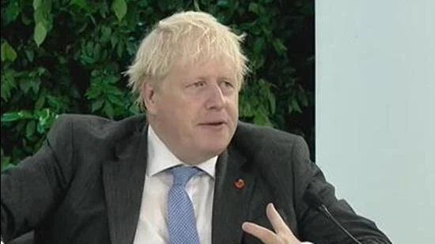
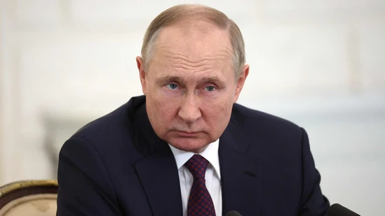

Boris Johnson said the emergence of Rishi Sunak as Britain’s first prime minister of Indian extraction was a “fantastic thing”, not just in terms of what it said about British society but also because it showed that the ruling Conservative Party as the pre-eminent party of opportunity and hope
NEW DELHI: Former British prime minister Boris Johnson on Saturday made a strong pitch for the speedy conclusion of the India-UK free trade agreement (FTA), including steps to remove high tariffs on British products such as Scotch whisky and automobiles and to ensure the mobility of Indian professionals.
“Let’s get it [FTA] done,” Johnson said several times during a conversation with HT editor-in-chief R Sukumar at the 20th Hindustan Times Leadership Summit, pointing to the enormous opportunities that the deal will open up for businesses and “hard-pressed consumers” in both countries.
Johnson described the emergence of Rishi Sunak as Britain’s first prime minister of Indian extraction as a “fantastic thing”, not just in terms of what it said about British society but also because it showed that the ruling Conservative Party – which produced three women prime ministers and the first premier of South Asian descent – as the pre-eminent party of opportunity and hope in the UK.
India and the UK missed the deadline to conclude the FTA by Diwali, which was celebrated on October 24, because of differences on several key issues, including the Indian demand for greater mobility for students and professionals and the British call for greater market access in certain areas and for lowering tariffs on items such as Scotch whisky.
